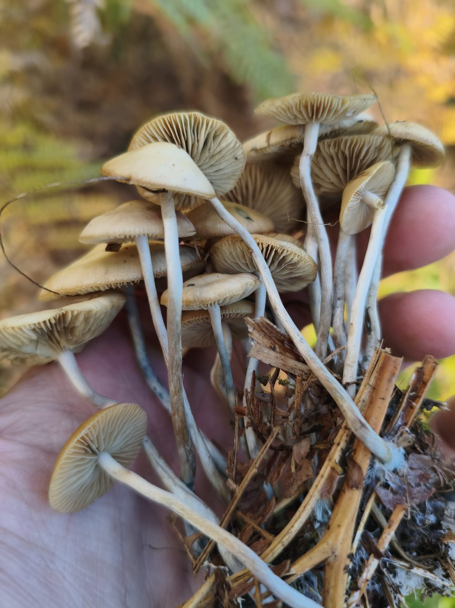
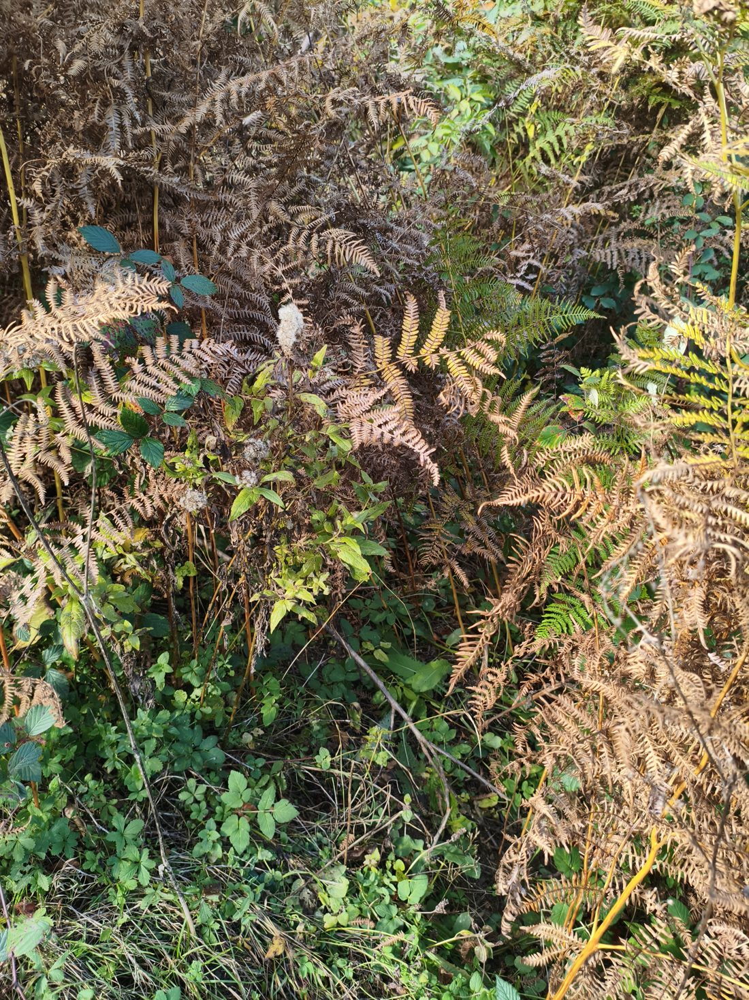
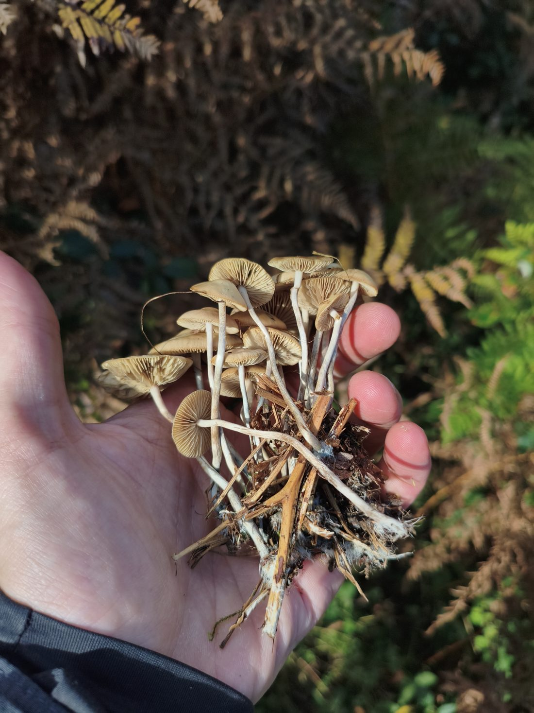
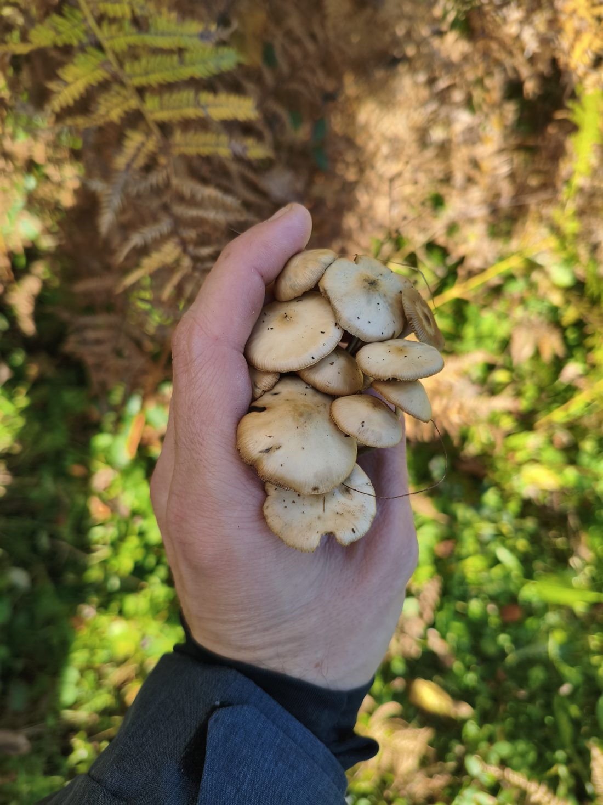

The recipe in three moves
If you remember only three things, make it these.
Rain 20+ mm
One day with at least 20 mm of rain measured by the station, in late October (after 20 Oct).
Wait 9 days
Strong flushes came exactly on day 9 after the trigger rain. Look on days 8–10.
Cold is OK
After the 2026 trigger there were two frosts (−0.1 °C and −0.5 °C) and the flush was still huge.
What a find looks like
Photos by the observer from the micro-site. Tap an image to enlarge.




The photos show the observer’s find and are not an identification aid.
Rain, frost and finds, day by day
On 22 Oct, 21.8 mm fell. The first finds came on 24 Oct and the big flush on 31 Oct, exactly nine days after the trigger. Hover (or tap) a bar for details.
Values for unlabelled days are read off the author’s chart. Only 21.8 mm (22 Oct), 8.9 mm (24 Oct) and the 22.6 mm total for 8–12 Oct are exact.
Nine days, every time
All four strong flushes appeared after exactly 9 days. The weak flush (2021) and the first 2026 wave came later.
Biggest 1-day rain after 20 October
The green zone starts at about 20 mm. Below it there was no strong flush; above it, one never failed to appear.
The threshold is only bracketed: 17.8 mm (no find) and 21.8 mm (strong). The true threshold at the micro-site may be higher.
Year by year
September and early-October rain does not separate the years. Only the late-October trigger day does.
When should I go looking?
Enter the date and the measured rain. The calculator applies the rule from this observation; it is not a forecast.
How good were the forecasts?
Forecast rain for a single day is unreliable; in one case it was 3.5× too high. Better to wait for the measurement and count 9 days.
How to use this
- Wait for rainA day with 20+ mm after 20 October. Check the measured value, not the forecast.
- Count to 9Go looking 8–10 days later, best on day 9.
- Repeat after small rainsAfter any smaller rain, check again about 7 days later for tiny new specimens.
- Log everythingDate, count and stage (young/mature) at every visit, including empty ones.
What did not explain the pattern
Variables that look important but did not separate good years from bad ones in this data.
Temperature
2026 was cooler (about 7.5 °C after rain) than earlier strong years (9–13 °C) and still gave a big flush. Only 2021 (5.3 °C) was colder and weak.
Frost
Not needed (none in 2022) and not harmful (1–2 in 2023–2026).
Soil wetness
Estimated from rain; it does not separate the years. Soil was not measured.
Humidity, wind
An exploratory difference in 2021–2025 that is probably chance; not re-tested in 2026.
What this observation cannot tell you
This is not a scientific result but an exploratory observation by one observer.
Six autumns, one site
Four strong flushes are a small sample. The 9-day match is striking but could be chance.
The threshold is bracketed, not determined
It lies between 17.8 mm (no find) and 21.8 mm (strong). It is measured at the station (366 m); nearby mountain stations reported 1.3–1.8× more rain according to the observer, so the true threshold at the site may be higher.
2021 and 2024 depend on search effort
In these two years we cannot be sure whether the mushroom was truly absent or simply not found. The attribution of the 2026 wave (8–12 Oct and 24 Oct) is a hypothesis.
No soil sensors
There is only air data, and the rule is fitted to the same data it describes. Test it in autumn 2027 with a prediction written down in advance.
Author’s correction
The earlier 35 mm threshold was too strict, and the prediction of a weak flush for 24 Oct was wrong. After a wet September, about 22 mm in one day was enough.